Apie žaidimą
About
Tikros gatvės, pastatai ir reljefas iš atvirųjų duomenų. Vairuok, vaikščiok, „pasiskolink“ kito mašiną, vežiok keleivius ir siuntas.
Real streets, buildings and terrain from open data. Drive, walk, “borrow” someone else's car, carry passengers and parcels.
Kadrai
Screenshots
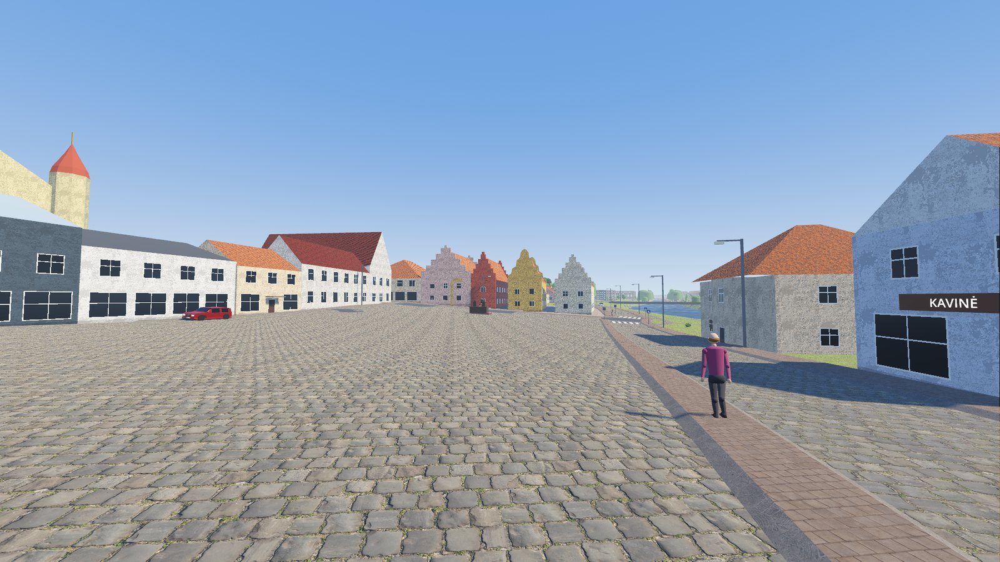
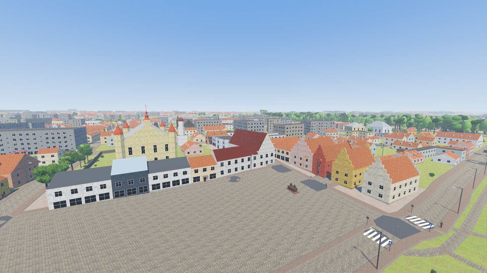
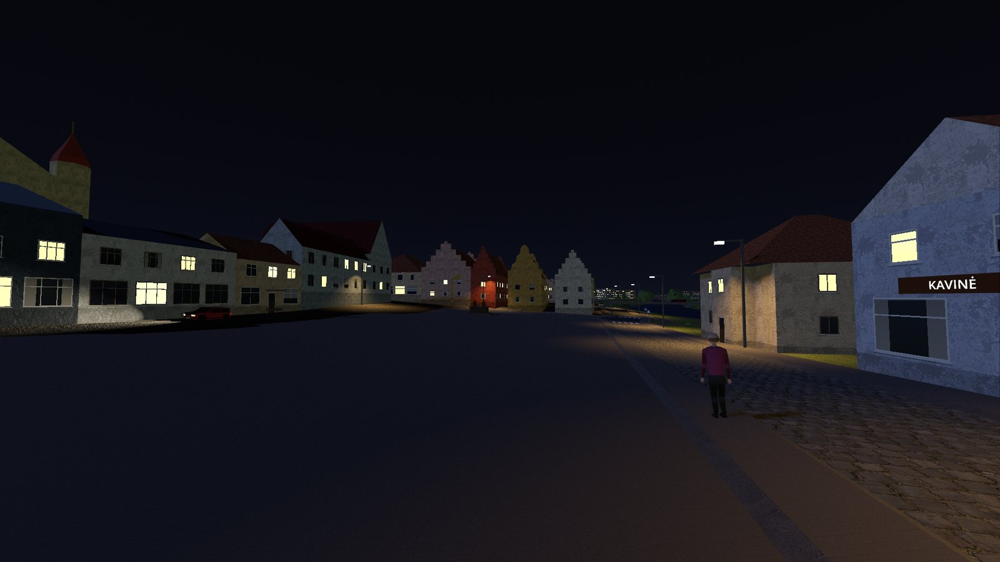
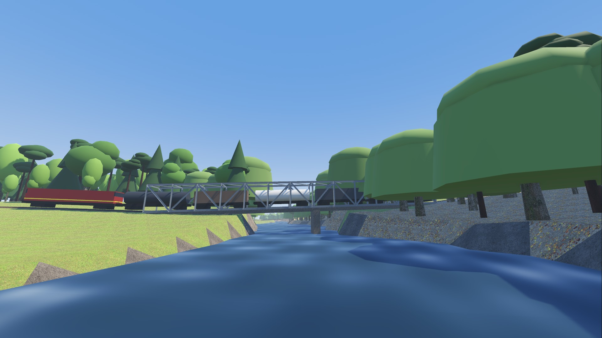
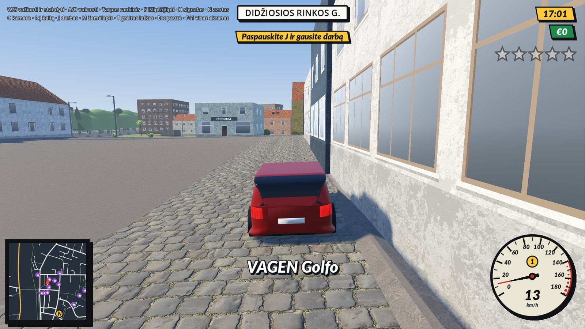
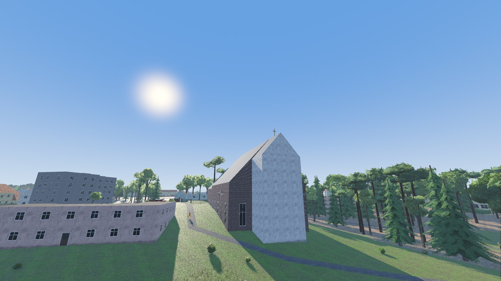
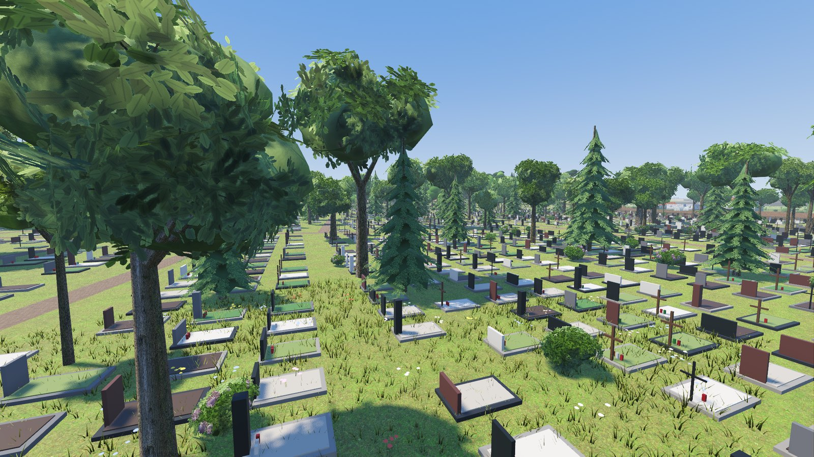
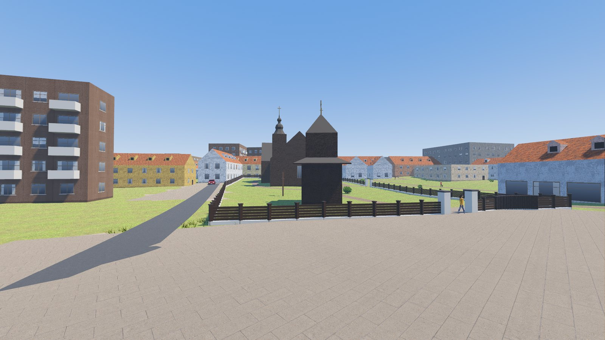
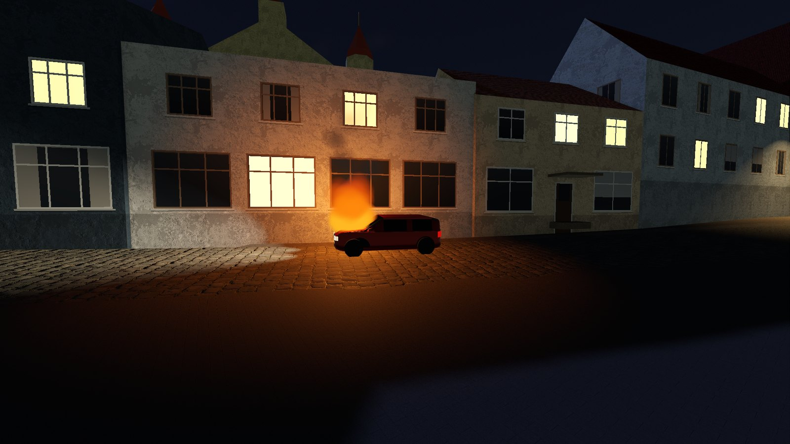
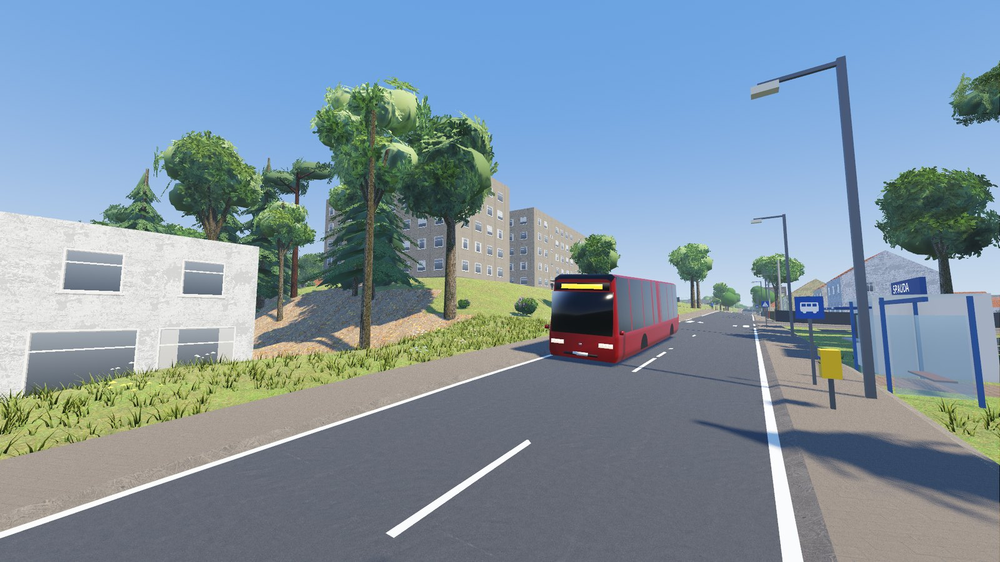
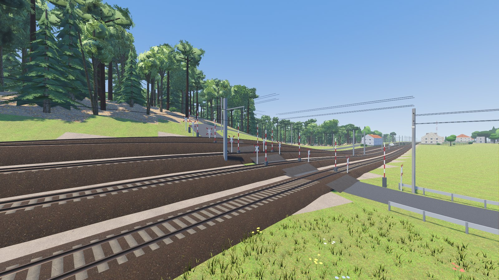
Kas viduje
Features
- Visi Kėdainiai tikro dydžio: apie 6 300 pastatų, Nevėžis, geležinkelis ir laukai aplink
- Senamiestis, rotušė, minaretas, bažnyčios, sinagogos ir kiti žinomi pastatai
- Vairuok ar vaikščiok; eismas, policija, tikri raudonų autobusų maršrutai
- Darbai: taksi, siuntos, picos, Agurkų šventė, lenktynės ir dar daugiau
- Diena ir naktis · lietuviškai ar angliškai · galima žaisti ir naršyklėje
- All of Kėdainiai at real size: about 6,300 buildings, the Nevėžis, the railway and the fields around
- The Old Town, the Town Hall, the minaret, the churches, the synagogues and other landmarks
- Drive or walk; traffic, police, the real red town bus lines
- Jobs: taxi, parcels, pizza, the Cucumber Festival, street races and more
- Day and night · Lithuanian or English · also playable in a browser
Valdymas
Controls
Sistemos reikalavimai
System requirements
Nieko diegti nereikia — nei Godot, nei Python, nei kitų programų. Žaidimo variklis ir visi duomenys yra atsisiųstame faile: išarchyvuok ir paleisk.
Nothing to install — no Godot, no Python, no other software. The game engine and all data are inside the download: unzip and run.
Windows 10 arba 11, 64 bitų
Windows 10 or 11, 64-bit
macOS 10.15 Catalina ar naujesnė (Intel); macOS 11 ar naujesnė (Apple Silicon)
macOS 10.15 Catalina or newer (Intel); macOS 11 or newer (Apple Silicon)
64 bitų (x86_64), glibc 2.28+ (Ubuntu 20.04, Debian 10, Fedora 29 ar naujesnė)
64-bit (x86_64), glibc 2.28+ (Ubuntu 20.04, Debian 10, Fedora 29 or newer)
Spausk „Naršyklėje“: žaidimas atsisiunčia ~100 MB ir pasileidžia (Chrome, Edge, Firefox ar Safari su WebGL 2). Grafika paprastesnė nei atsisiunčiamoje versijoje: be gatvės baldų, kapų, tvorų ir geležinkelio pabėgių.
Click “In browser”: the game downloads ~100 MB and starts (Chrome, Edge, Firefox or Safari with WebGL 2). Simpler graphics than the download: no street furniture, graves, garden fences or railway sleepers.
Kaip paleisti
How to run it
Išarchyvuok ir paleisk Kedainiai.exe (vienas failas). Jei Windows įspėja: „Daugiau informacijos“ → „Vis tiek paleisti“.
Unzip and run Kedainiai.exe (a single file). If Windows warns you: “More info” → “Run anyway”.
Išarchyvuok ir perkelk Kėdainiai 3D.app į „Programos“. Jei macOS neleidžia atidaryti: Sistemos nustatymai → Privatumas ir sauga → „Vis tiek atidaryti“, arba Terminale xattr -dr com.apple.quarantine "/Applications/Kėdainiai 3D.app". Tinka Intel ir Apple Silicon.
Unzip and move Kėdainiai 3D.app to Applications. If macOS will not open it: System Settings → Privacy & Security → “Open Anyway”, or in Terminal xattr -dr com.apple.quarantine "/Applications/Kėdainiai 3D.app". Works on Intel and Apple Silicon.
Išarchyvuok ir paleisk ./Kedainiai.x86_64.
Unzip and run ./Kedainiai.x86_64.